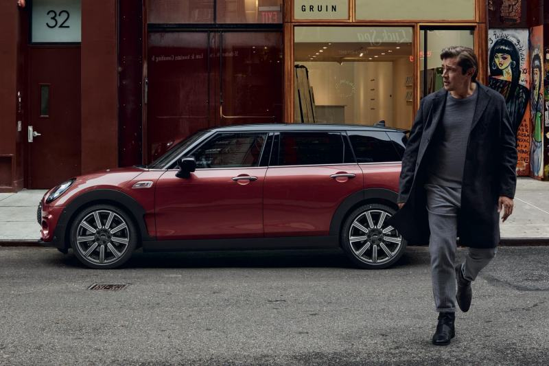

НОВЫЙ MINI CLUBMAN.
ГОВОРЯТ, ПОЛУЧИТЬ ВСЕ И СРАЗУ НЕВОЗМОЖНО. НО МЫ ЭТОМУ НЕ ВЕРИМ.
Долгое ожидание наконец-то завершено. Позвольте представить вам самый элегантный, практичный и просторный MINI в истории. За рулем нового MINI Clubman перед вами открываются все двери – и новые горизонты. Этот пятиместный шестидверный автомобиль позволяет вам взять с собой в поездку все необходимое. Объем просторного багажного отделения может достигать 1250 литров, предлагая еще больше свободного пространства для ваших планов. А превосходная система полного привода ALL4 обеспечит контроль на любых дорожных покрытиях, делая этот автомобиль идеальным выбором для выполнения любых задач в любое время года.

ДЕРЗКИЙ ВНЕШНИЙ ВИД.
Дерзкий и уверенный внешний облик нового MINI Clubman сочетает в себе стиль и практичность. Сочетание резких граней и смелых линий создает элегантный и экспрессивный дизайн. Ниспадающая плечевая линия притягивает взгляд к фирменным распашным дверям, открывающим самые широкие возможности. Светодиодные фары нового дизайна и задние фонари Union Jack излучают безграничную уверенность и безупречный стиль. А новая привлекательная решетка радиатора, новые цвета кузова, варианты колесных дисков и внутренней отделки не оставляют сомнений: настало время самостоятельно испытать властную индивидуальность нового MINI Clubman.
КОМФОРТ ПРЕЖДЕ ВСЕГО.
Когда речь заходит о свободном пространстве, новый MINI Clubman обеспечивает беспрецедентные возможности – гарантируя вам максимальные комфорт и практичность. В его просторном салоне могут с комфортом разместиться пять взрослых пассажиров. А в багажном отделении с гибкими возможностями организации пространства всегда хватит места для любой запланированной поездки. Салон MINI Clubman создает впечатление уюта и гостеприимства благодаря премиальным материалам отделки – таким как роскошная кожа обивки сидений. Это ощущение подчеркивается многочисленными разноцветными опциями, каждая из которых создает уникальную неповторимую атмосферу – от классических Carbon Black и Malt Brown до ярких Indigo Blue или Satellite Grey. А эллипсы на дверях с фоновой подсветкой и многочисленные варианты декоративных панелей салона обеспечивают яркие дизайнерские акценты, задающие настроение в каждой поездке.
ИНТЕЛЛЕКТУАЛЬНЫЕ ВОЗМОЖНОСТИ СВЯЗИ.
Центральным элементом и настоящим живым сердцем салона нового MINI Clubman является центральная консоль с эксклюзивным сенсорным экраном высокого разрешения с диагональю 6,5 или (опционально) 8,8 дюйма. Этот интуитивный центр управления откроет вам доступ в мир информации и развлечений MINI Connected. Обеспечивая удобную интеграцию с любыми устройствами, он позволяет вам управлять онлайн-навигацией, наслаждаться полноценным функционалом Apple CarPlay, а также пользоваться услугами консьерж-сервиса MINI и другими многочисленными возможностями связи.
ИДЕАЛЕН ДЛЯ ЛЮБОЙ СИТУАЦИИ.
MINI Clubman олицетворяет собой неотразимое сочетание практичности, простора, высочайшего качества и превосходной динамики, объединяя в себе все, что вам необходимо. Премиальные материалы и вдохновляющие дизайнерские решения гарантируют, что куда бы вы ни отправились, вы всегда будете окружены безупречным стилем и высочайшим комфортом. Вы всегда будете покидать место водителя с чувством сожаления.